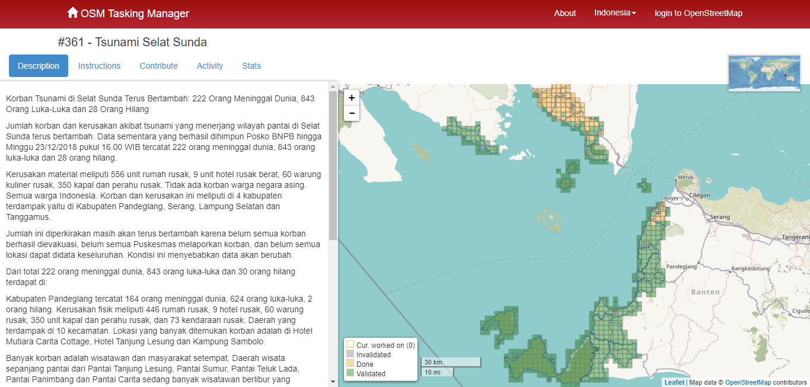
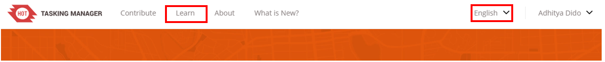
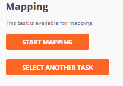
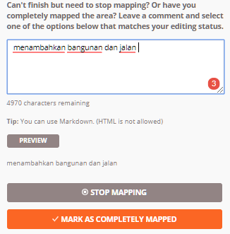
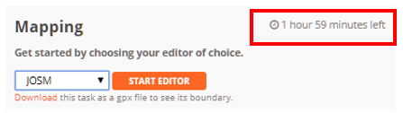

Using Tasking Manager
Download page as PDFObjectives:
- Using functions of tasking manager for participatory mapping
- Operating tasking manager for mapping
As an alternative for open source mapping platform, OpenStreetMap allows everyone to do mapping anytime, anywhere. The problem is, what if you want to do mapping along with the other mapper on the same time? Tasking Manager allows you to divide an area of mapping so everyone can do mapping together. In this module, you will learn more detail about Tasking Manager and how to mapping using Tasking Manager.
I. What is Tasking Manager?
1. The Definition of Tasking Manager
Tasking manager is a tool created specifically for participatory mapping. With Tasking Manager, you can simply do mapping together with the other on the same location, but with different area of mapping. Tasking manager can split the mapping area into separate grid or square. You can also use tasking manager to see your mapping progress, which are still need to map or which area is fully mapped.
Now let’s think about this. Imagine if you want to create a mapping project in a specific area where you need to do the project together with another 20 mapper. If you’re not using tasking manager, there is a possibility of conflict between other mapper or between the data. With tasking manager, you can avoid the conflict and make the mapping project more fast and efficient.
2. The example of Tasking Manager
Tasking manager used as a response when Haiyan typhoon occurred in the Philippines on November 8, 2013. Mapping area located in Tacloban city as one of the most severely damaged when the disaster happened. Within 24 hours after the tasking manager project was created. 10.000 buildings added or around 25% of the building amount in Tacloban City. This mapping project was carried out by 33 volunteers.
Density of the building before and after mapping using Tasking Manager
Tasking manager are also used in Indonesia as a response when disaster happened. One of the examples is when the earthquake and tsunami struck in the Sunda Strait in December 2018. Within a month, all affected areas were mapped by 60 volunteers.

Tasking Manager as a response of earthquake and tsunami on Sunda Strait
II. Starting Tasking Manager
You can open the tasking manager on https://tasks.hotosm.org/. You should see the website looks exactly like the picture:

Tasking Manager home page
On the main page, you can see several menu. If you want to change the language, you can choose the down-arrow button on the left side of the Login button. You can choose Learn button on the top side If you want to learn more detail about tasking manager.

You can change the language using button on your right side and Learn on your left side
Before you can start using Tasking Manager, there are a few things you need to know:
1. Login to Tasking Manager
You need to login with your OSM account. Choose Login button on the top right side of your screen, then write your OpenStreetMap account. On Authorize access to your account option, give checkmark on read your user preferences, then select Grant Access. Please check on the image for more detail:

You must allow JOSM to read your user preferences
You will directed to the Tasking Manager homepage after you login with your OSM account. If you see your OSM account name, then you are successfully login to Tasking Manager. Choose Start Mapping or Contribute on the left side of the screen if you want to start mapping immediately.
Contribute and Start Mapping button on Tasking Manager page
2. Searching Project on Tasking Manager search box
On this page, you will see two different view, Grid View and Map View. on the Grid View, there are few things you should notice, like:

You can change the setting on the Grid View layout
Search
On the search box, you can search your tasking manager project using certain keyword like sub-village, village, province, or by project name.
Project
On this part, you can see list of the tasking manager project created before.
Mapping Difficulty
On this section, you can set your own mapping difficulty level of your project. There are 3 different levels: beginner, intermediate, and advance. If you want to see all the project, choose All.
Organization
You can choose the creator of the project like American Red Cross, Missing Maps, HOTOSM, or HOT Indonesia.
Campaign
You can also find your tasking manager project based on certain campaign. For example, you can choose project for Malaria Elimination.
You can change the layout from Grid View to Map View. On the Grid View, you can see list of the project on grid/square layout. If you choose Map View, you can see the world map with blue dots on the top of the map.

You can change the layout from Grid View to Map View using this button
After you change your layout into Map View, the page will be like this:

Map View on Tasking Manager
You can use the plus and minus button on the left side of the map to change your zoom level. When the zoom level is upgraded, there will be a bunch of tasking manager project marked with coloured dots. Each different colors represent the priority of project from urgent to low.

If you want to search project, you can set your layout into the Grid View and move your pointer to the search box. In this module, we will try to search tasking manager project using keyword ‘Penjaringan’, and then press Enter. You can leave other configuration empty like mapping difficulty, organization, and campaign.

Result for tasking manager’s project with keyword of ‘penjaringan’
Tasking manager will show list of all projects that contain the keyword ‘Penjaringan’. Chose the project on the top right corner labeled with_ ‘#781 - INSIST II ( Integrated Services for Infrastructure and Sanitation Technology ) II - Kelurahan Penjaringan’_.
3. Get to know about Tasking Manager Layout and Display
When you select one project, you will see the project page like this:

Tasking manager #781 INSIST - Kelurahan Penjaringan (Penjaringan District)
This page shows you the information about tasking manager project we selected before. On the Project description, you can read the mapping background. Below the description, you can see more detail about the project, from priority level, organisation, creator name, difficulty, and list of objects needed to be mapped. If you want to create your own tasking manager project, you can read the guide on the Creating and Managing Tasking Manager.
Tasking Manager’s project layout
Under the description box, you can see the map on the right side and view information on the left side. If you see on the map field, you can see different grid/square with different color. Those colors represent:

- Ready
Shows that you can map the grid selected
- Mapped
Grid marked with yellow color shows you that the grid has already been mapped
- Bad Imagery
Grey-blackish colored grid marked as an area with bad imagery
- Validated
Green colored grid shows that the grid has been validated
- Invalidated
Grid marked with red color shows that the grid need to be re-checked before you can do validation again
- Locked
Grey colored grid shows that the square has been selected by another user
- Locked by you
Grid with blue outline colored shows that this grid is being selected by you
4. Contribute on Tasking Manager Project
You can contribute in tasking manager in two different ways, digitizing and validating. To start contributing and do the mapping, please follow these steps below:
Select Map button.
Next, you need to select one grid/square you will work on. You can straightly choose one grid/square on the project or by using Select a Random Task button.

You can change the basemap so you can see which area covered by cloud.
If you find area covered by the cloud, please select Mark as Bad Imagery button. If you see there is only forest in most of your mapping area, you can choose Mark as Completely Mapped.
After you select your grid, press Start Mapping.

Select JOSM as your default mapping editor, then select Start Editor. Make sure that you have already open your JOSM before.

Tasking manager will automatically download OSM data. You can map the area using JOSM and satellite imagery based on information given by the project. If you want to learn more detail about how to mapping using JOSM, please go to the Using JOSM Module. Map all the objects inside the square/grid.

OSM data downloaded through tasking manager
Once you finished your mapping, don’t forget to upload your result periodically. Don’t forget to write down your comment when you upload the data. In the comment section, you can see default comment number similar to the tasking manager project. Please write your own comment after those numbers.

Comment section when you upload your JOSM data
- After you upload your data to OpenStreetMap, please go back to the tasking manager page. You can add your comment about changes happen. After finished mapping all objects, select Mark as Completely Mapped. But, if you haven’t finished your area, choose Stop Mapping and continue your work later or let the other contributor to finish the area.

Adding comment on tasking manager grid
5. Things you need to know when you selected your area
There are few things you need to know when you choose a tasking manager project.
You only have 120 minutes to do your mapping
When you select one grid/square, you will own the grid/square for 120 minutes or 2 hours. Make sure you still in time to mapping your area and upload your data periodically.

Notification of remaining time limit of your tasking manager’s grid
Don’t forget to unlock your square/grid
After you have finished your mapping, don’t forget to click Stop Mapping if you haven’t finished your job. Click Mark as Completely Mapped once you very sure that you have finished your mapping area.
You can use Stop Mapping button if you haven’t finished your grid
Do not map area outside tasking area

You can’t do mapping on the shredded area
When your square/grid already shown in JOSM, you can see there is two different area on the map, the shaded area and unshaded area. You only allowed to map on the unshaded area. Please remind this things carefully to avoid data crash between another user.
Special treatment for object located between the square boundary
Mostly when we mapping the area using tasking manager, you will see many objects located in between square boundary, like this:

Object located on the border of tasking manager grid
If you find those kind of object, you can draw the object slightly cross the boundary of your square. You need to draw the object like this especially for highway to give guidance for another user to continue your object.
SUMMARY
Now you have learned the definition of tasking manager. Tasking manager is a tool that can be used to do the participatory and collaborative mapping with another user. When there is an area needed to be mapped quickly, tasking manager can help you to do so. Hopefully when you do mapping using tasking manager, your project will finish quicker and well organized.